Sub2API K3 Apple-like UI Phase 1 审查包
可演示 / 视觉检查点 更新时间：2026-07-17（UTC+8）
1. 目标与设计原则
目标：不改任何业务契约与付费 Provider 路径，交付第一个可评审的 Apple-like 前端检查点，供用户决定是否批准全站迁移方向。
- 中性画布与分层表面（
--ui-canvas / --ui-surface / --ui-surface-raised），移除装饰性渐变（原薄荷 mesh 底色）； - 保留 Wujie 青品牌强调色；状态色只用于真实语义；
- 结果先行：结论 → ≤4 主 KPI → 次要指标 → 关注项 → 趋势与排行；
- tabular numerals、克制标签、单一主行动、显式空状态；
- 明暗双主题同源 token；尊重
prefers-reduced-motion； - Router → View → Store/Composable → API 流程不变，仅表现层重组。
2. 执行分支、baseline HEAD、review HEAD
| 项 | 值 |
|---|---|
| 执行分支 | codex/k3-apple-ui-experiment-20260717 |
| 对照基线分支 | wujie/video-capture-moat-20260702 |
| Baseline HEAD（merge-base） | deb9ff5b8876a5bca1a96f78d94f602a3fd5adb4 |
| Review HEAD（产品代码 tip） | 6b66dbf06d8465c288534c0b882f589e48a109cb |
| 提交链 | f9c6e881 设计 → b7e42b34 计划 → ea6da06b tokens → 8ea98019 shell → e7e6ede1 dashboard → 6b66dbf0 video →（本审查包文档提交） |
3. 精确变更清单
git diff --name-only wujie/video-capture-moat-20260702...HEAD：20 个文件，+1394/−639。产品代码改动全部位于 frontend/**（18 个文件）；非 frontend 改动仅 2 个任务文档（计划 + 设计规格）。Task 5 仅新增/更新 docs/reviews/**。
| 文件 | 任务 | 变更性质 |
|---|---|---|
frontend/tailwind.config.js | 1 | spacing/radius/shadow/color/motion tokens |
frontend/src/style.css | 1 | --ui-* 变量 + .ui-* 语义类 + reduced-motion |
frontend/src/__tests__/visualTokens.spec.ts | 1 | token 契约测试（14 例） |
frontend/src/components/layout/AppLayout.vue | 2 | 页面画布、256/72px 侧栏、粘性头部、landmark |
frontend/src/components/layout/AppSidebar.vue | 2 | 导航呈现重组（计算逻辑未动） |
frontend/src/components/layout/AppHeader.vue | 2 | 页首层级 |
frontend/src/components/layout/TablePageLayout.vue | 2 | 表格页组合 |
frontend/src/components/layout/__tests__/AppLayoutVisualContract.spec.ts | 2 | shell landmark 契约测试 |
frontend/src/components/layout/__tests__/AppSidebar.spec.ts | 2 | 导航构建器回归断言 |
frontend/src/views/admin/DashboardView.vue | 3 | 老板仪表盘 outcome-first 重排 |
frontend/src/views/admin/__tests__/DashboardView.spec.ts | 3 | 层级顺序断言 |
frontend/src/i18n/locales/en/admin/overview.ts / zh/admin/overview.ts | 3 | 新文案键（英/中） |
frontend/src/views/admin/video/VideoDashboardView.vue | 4 | 视频总览：状态 → 推荐下一步 → 入口 |
frontend/src/views/admin/video/VideoCreateTaskView.vue | 4 | 创建页主流程层级 |
frontend/src/views/admin/video/VideoTasksView.vue | 4 | 筛选与结果分离、状态显式 |
frontend/src/views/admin/video/__tests__/VideoCreateTaskExecutionMode.spec.ts / VideoTasksView.spec.ts | 4 | 表现层断言 |
4. 前后对比截图
左/上为 2026-07-15 基线（本地 G6 栈真实渲染，目录 assets/real-product-readiness-20260715/），右/下为本阶段（全 mock 渲染，目录 K3_APPLE_UI_PHASE1_20260717/screenshots/）。逐图人工核对：无横向溢出、无装饰渐变残留、无真实付费触发。
老板仪表盘 1440 浅色
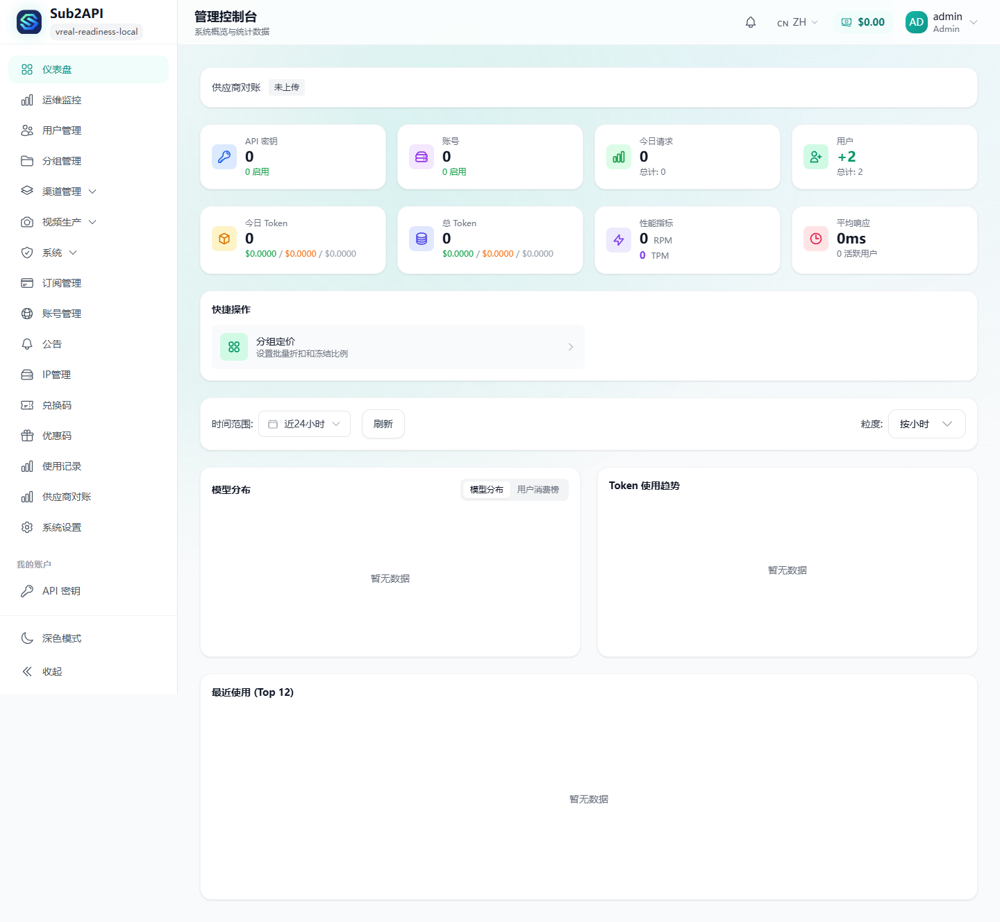
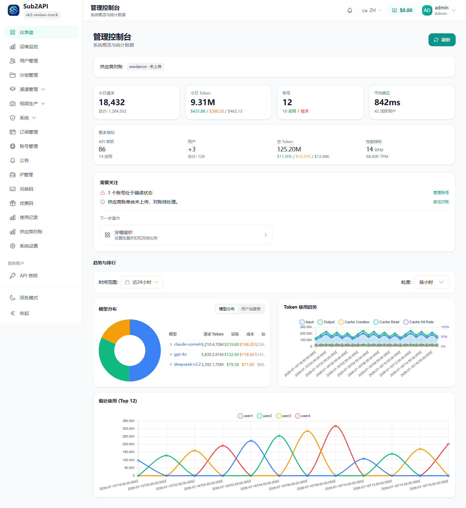
老板仪表盘 1440 深色（新产出，无基线）
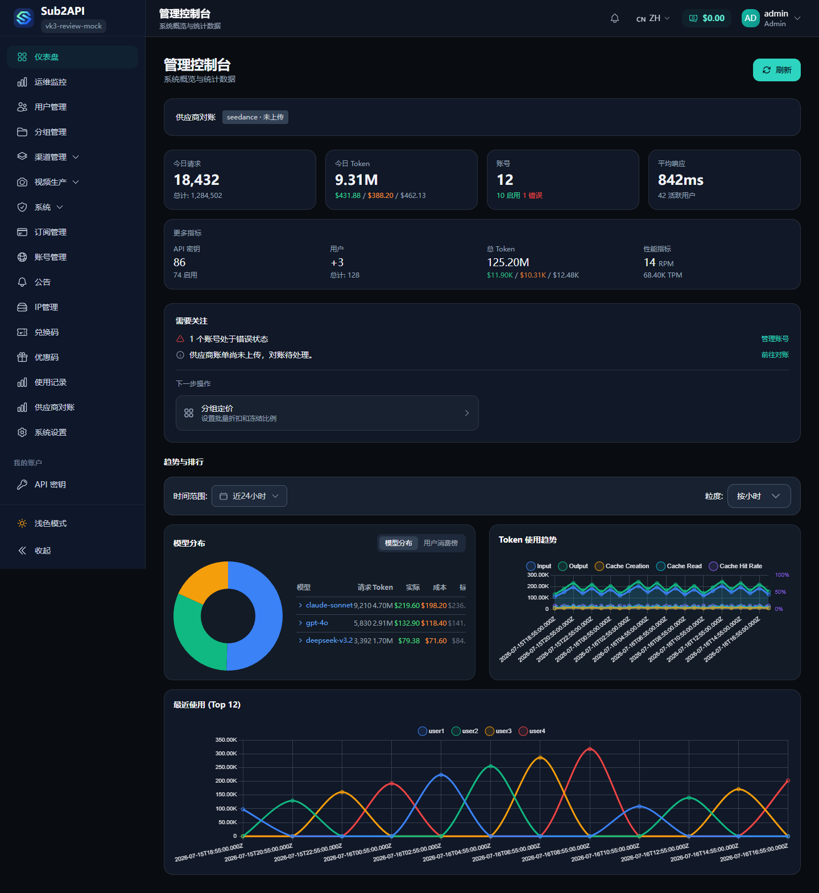
管理员视频总览 1440 浅色
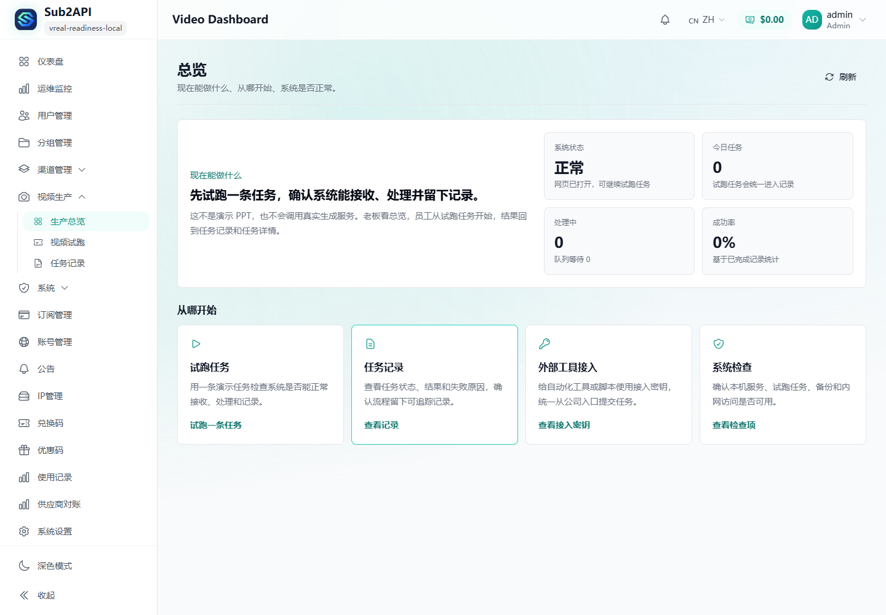
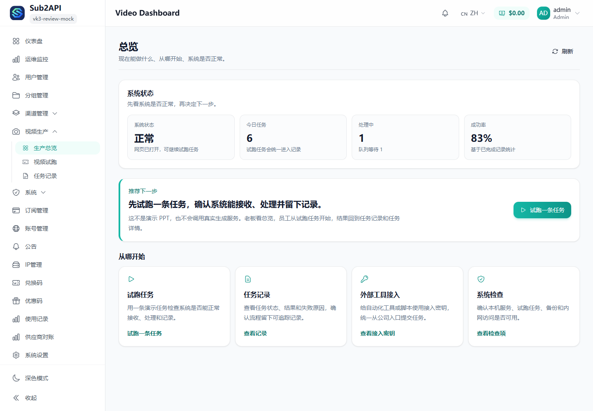
员工创建任务 1440 浅色
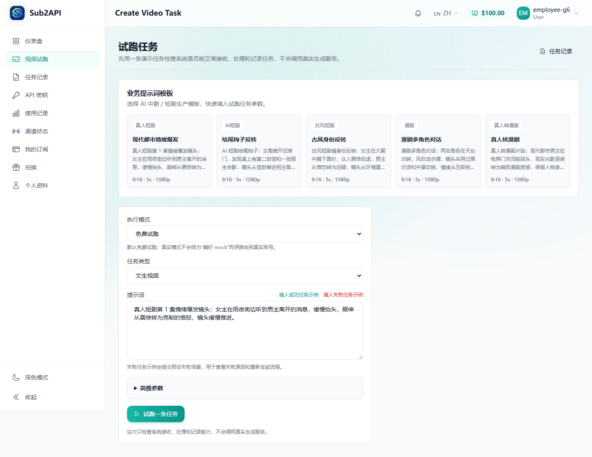
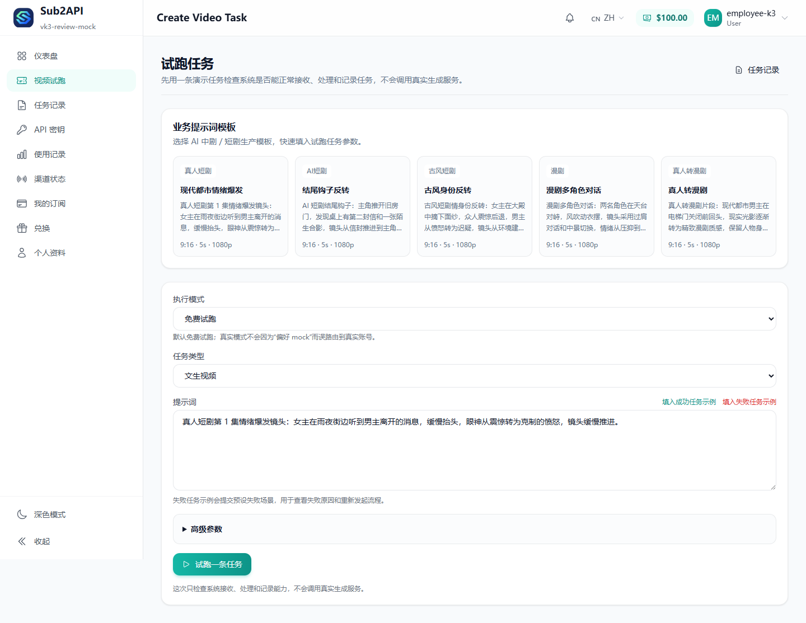
员工任务记录 1440 浅色 / 深色
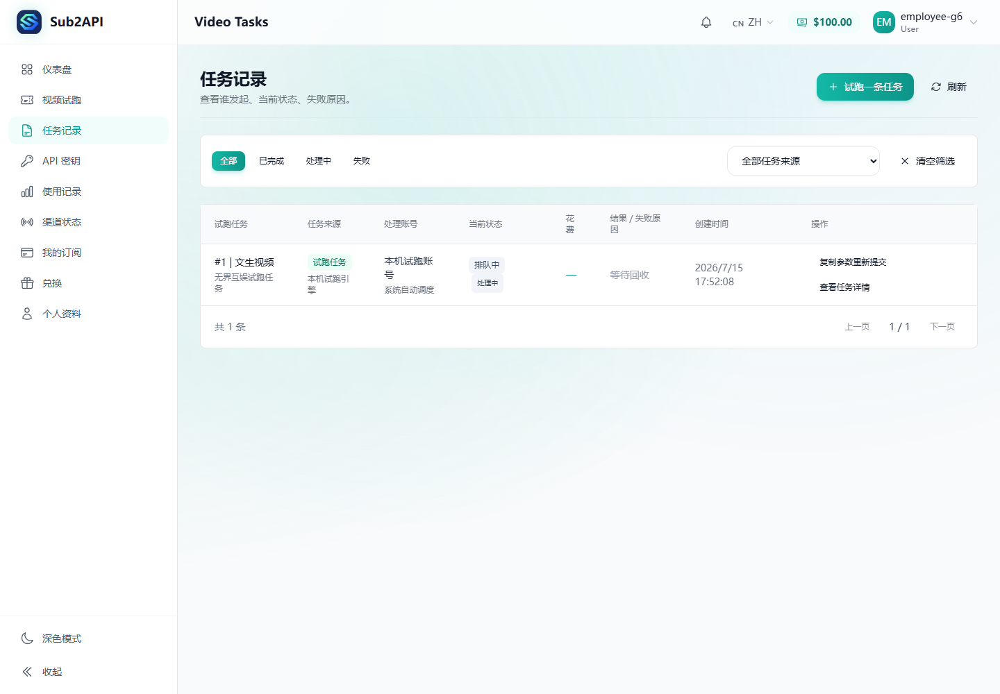
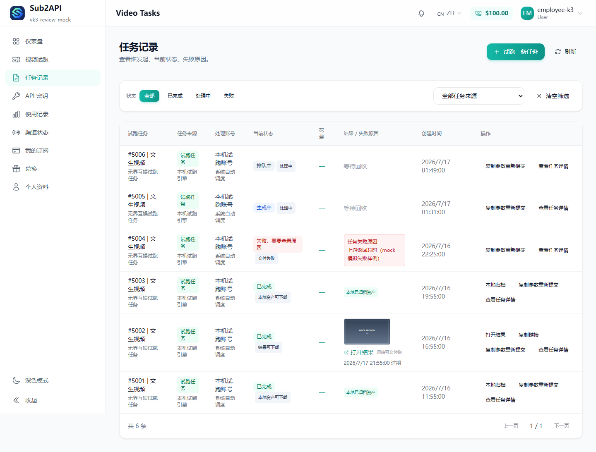
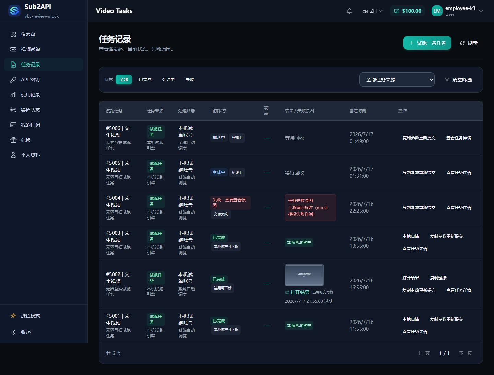
员工任务记录 390 浅色 / 深色
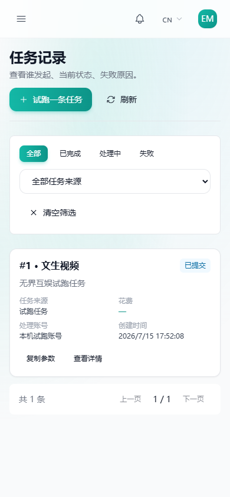
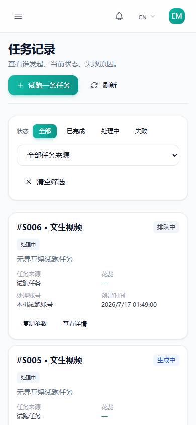
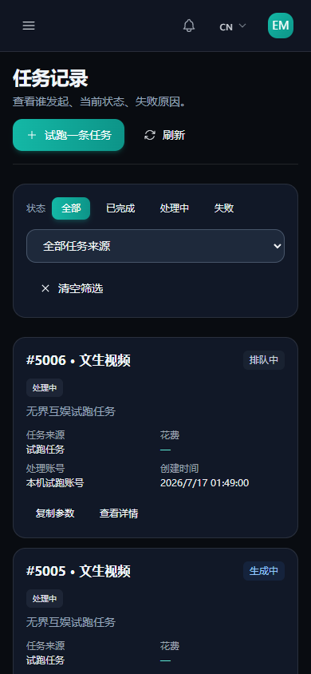
5. 三角色与四种视图矩阵
| 角色 \ 视图 | 老板仪表盘 | 管理员视频总览 | 员工创建任务 | 员工任务记录 |
|---|---|---|---|---|
| Boss（admin） | ✅ 浅+深 1440 | ✅ 浅 1440 | — | — |
| Admin | （同 Boss） | ✅ 浅 1440 | — | — |
| Employee | — | — | ✅ 浅 1440 | ✅ 浅/深 1440 + 浅/深 390 |
管理员视频总览深色、创建页深色/移动视口未纳入本阶段矩阵，见第 7 节。
6. 验证命令、退出码和结果
| 门禁 | 命令 | 退出码 | 结果 |
|---|---|---|---|
| ESLint | npx.cmd eslint . --ext .ts,.vue --max-warnings=0 | 0 | PASS（0 错误 0 警告） |
| 类型检查 | npx.cmd vue-tsc --noEmit | 0 | PASS |
| 全量测试 | npx.cmd vitest run --reporter=basic | 0 | PASS（152 文件 / 964 测试，0 失败 0 跳过） |
| 生产构建 | pnpm.cmd run build（= vue-tsc -b && vite build） | 0 | PASS（33.83s；产物在 gitignored 的 backend/internal/web/dist/） |
卫生检查：git diff --check 退出 0；git status --short 干净；diff 中产品代码改动全部位于 frontend/**。截图证据：8/8 成功，73 次 API 调用全部被本地 mock 拦截，控制台错误 0，密钥模式命中 0。完整原始记录见 K3_APPLE_UI_PHASE1_20260717/validation.log 与 capture-evidence.json。
7. 未验证或跳过项
- 截图为全 mock 渲染（vite preview + 路由拦截），未连真实后端；真实数据形态差异未验证。
- 深色覆盖不全：管理员视频总览深色、创建页深色/移动视口未截图。
- 未做像素级 diff，前后对照为人工逐图比对。
- 真实付费路径按设计禁止：未调用真实 Provider、未上传真实账单、未执行真实 create。
- 后端门禁未运行（本阶段无
backend/**改动）。 - 既有
AccountsViewchunk >500 kB 构建警告（非本次引入）未处理。 - 既有 vue-i18n runtime-build 测试警告（payment 组件，非本次引入）。
- 深色图为首次产出，无历史基线对照。
8. 业务不变量复核
| 不变量 | 复核方式 | 结论 |
|---|---|---|
| 路由守卫/角色边界 | guards / feature-access / video-route-access 测试全绿；router 无 diff | ✅ |
| 执行模式语义（mock/review_real/internal_real） | VideoCreateTaskExecutionMode 测试全绿；能力门逻辑无 diff | ✅ |
| Idempotency-Key 行为 | 视频测试套件全绿；提交链路无 diff | ✅ |
| 任务生命周期轮询条件 | useVideoTaskLifecycle 相关测试全绿；轮询条件无 diff | ✅ |
| 本地归档 vs 远端可交付物区分 | 截图 #5001/#5003（本地已归档）与 #5002（远端可交付 + 过期时间）并陈；判定逻辑无 diff | ✅ |
| 货币语义（$ 不擅自转 CNY） | formatByCurrency 未改；UI 仍以 $ 展示 | ✅ |
| 对账结论诚实待处理 | fixture 返回 not_uploaded，UI 如实显示“未上传/对账待处理” | ✅ |
| 功能开关/菜单计算 | AppSidebar 断言 adminNavItems/userNavItems/applyFeatureFlags 保留 | ✅ |
| API 契约 | 无 src/api/** 与 backend/** diff | ✅ |
9. 风险与回滚
- R1 视觉验证基于 mock 数据，真实数据密度下的折行/溢出未完全暴露 → Phase 2 用本地 G6 栈复截。
- R2 新增 i18n 文案键（en/zh admin/overview），其他语言缺失时回退键名，影响仅限新 UI 文案。
- R3 仪表盘模型分布表在 1440 宽、长模型名下末列轻微截断（记录在案，本任务不修产品代码）。
- R4 趋势图 X 轴直接渲染后端日期串，长 ISO 串下可读性一般（mock fixture 放大此现象；真实后端返回格式未变）。
回滚：纯前端、无数据库迁移、无后端/配置改动。git revert ea6da06b^..6b66dbf0（或以 deb9ff5b 为基线废弃分支）即可回到基线外观；审查包文档可独立删除。
10. 当前状态
11. Phase 2 建议与明确停止点
- 在 docker 可用环境用本地 G6 栈对真实后端复截同矩阵，替换 mock 证据；
- 引入 Playwright 像素级视觉回归，固化本阶段外观为基线；
- token 层推广到剩余高频视图（用户管理、渠道、密钥、使用记录），每次一个切片、同一门禁节奏；
- 补齐深色矩阵与 390 视口其余页面；
- 可访问性走查（对比度、焦点序、reduced-motion 实测）；
- 处理 R3/R4 两个表现层小瑕疵。
明确停止点：已在 Phase 1 审查包处停止。未经用户明确批准，不开始 Phase 2；不 push、不合并、不部署。
12. 文件索引
| 路径 | 说明 |
|---|---|
docs/reviews/K3_APPLE_UI_PHASE1_20260717/SUMMARY.md | 审查摘要（与本包同内容 Markdown 版） |
docs/reviews/K3_APPLE_UI_PHASE1_20260717/validation.log | 门禁与卫生检查原始记录 |
docs/reviews/K3_APPLE_UI_PHASE1_20260717/capture_k3.mjs | 全 mock 截图脚本（可复跑） |
docs/reviews/K3_APPLE_UI_PHASE1_20260717/capture-evidence.json | 截图证据（角色/路由/视口/主题/URL + API 拦截清单 + 密钥扫描） |
docs/reviews/K3_APPLE_UI_PHASE1_20260717/screenshots/ | 8 张新截图 |
docs/reviews/K3_APPLE_UI_PHASE1_20260717/assets/mock-remote-preview.svg | 远端结果预览占位图（fixture） |
docs/reviews/LATEST_REVIEW_PACKAGE.html | 本文件 |
docs/reviews/assets/real-product-readiness-20260715/ | 前后对比基线（2026-07-15） |
docs/superpowers/plans/2026-07-17-k3-apple-ui-phase1.md / .../specs/2026-07-17-k3-apple-ui-experiment-design.md | 执行计划 / 设计规格 |
13. 可复制后续提示词
你是 K3_Phase2_Executor。工作目录 D:\sub2api-trunk（分支 codex/k3-apple-ui-experiment-20260717）。 先读 docs/reviews/K3_APPLE_UI_PHASE1_20260717/SUMMARY.md 与 docs/superpowers/plans/2026-07-17-k3-apple-ui-phase1.md。 用户已批准 Phase 2：<在此粘贴用户批准原文>。 按 SUMMARY 第 11 节优先级执行：先在可用 docker 环境用本地 G6 栈复截真实后端同矩阵并替换 mock 证据； 再引入 Playwright 像素基线；然后每次只迁移一个高频视图到 token 层，迁移后跑 npx.cmd eslint . --ext .ts,.vue --max-warnings=0 / npx.cmd vue-tsc --noEmit / npx.cmd vitest run --reporter=basic / 构建四门禁。 约束不变：只改 frontend/** 与 docs/**；不读密钥；不调真实付费 Provider；不 push/部署/合并； 若用户未批准某子项，保持停止。